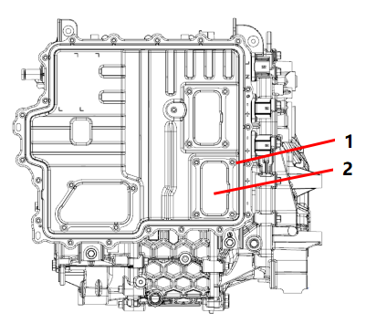
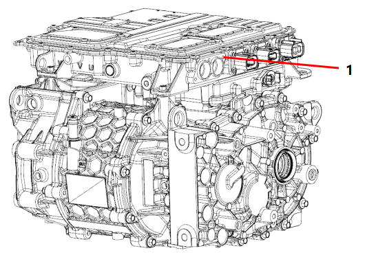
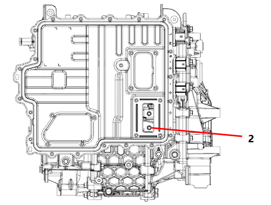

|
№ |
Операционные процессы |
Требования к сборке |
Инструмент / Вспомогательные материалы |
Меры предосторожности |
|
1 |
Подготовка автомобиля |
A: Загнать автомобиль на подъемник, отключить Питание автомобиля (ключ заблокирован); B: Выполнить подготовку перед Снятие в соответствии с Требования в Меры предосторожности; после завершения подготовки выполнить Снятие 4 болтов малой крышки контроллера на электродвигателе и контроллере электродвигателя в сборе (Рисунок 1), снять малую крышку контроллера (Рисунок 2).  C: Использовать мультиметр для проверки напряжения положительного и отрицательного полюсов шины постоянного тока; операции по Снятие можно выполнять только при значении напряжения менее 36 V. |
Динамометрический ключ, ключ или торцевая головка с внутренним профилем Torx |
Выполнить подготовку перед Снятие в соответствии с Требования в Меры предосторожности |
|
2 |
Снятие системы электропривода в сборе с автомобиля |
A: Выполнить Снятие шины постоянного тока, OBC, AC, PTC, DCDC, низковольтных разъемов и т. д. B: Выполнить Снятие других деталей вокруг системы электропривода в сборе, таких как провода заземления и т. д. C: Выполнить Снятие трубок подачи и возврата воды; после Снятие использовать Инструмент, чтобы заглушить трубки. D: Выполнить Снятие левого и правого приводных валов автомобиля. E: Использовать подъемную платформу для Установка на опоры системы электропривода в сборе, выполнить Снятие левой, правой и передней опор автомобиля, опустить систему электропривода в сборе. |
Динамометрический ключ, торцевая головка и т. д. |
|
|
3 |
Сборка системы электропривода в сборе на автомобиль |
A: Использовать подъемную платформу для Установка на опоры системы электропривода в сборе, собрать левую, правую и переднюю опоры автомобиля. B: Собрать приводные валы автомобиля. C: Собрать детали вокруг системы электропривода в сборе. D: OBC, AC, PTC, DCDC, низковольтные разъемы; слегка потянуть за разъем, чтобы убедиться в правильности сборки. E: Установить шину постоянного тока в электродвигатель и контроллер электродвигателя в сборе, предварительно ввернуть 2 болта крепления шины постоянного тока (Рисунок 1), момент затяжки составляет 10 Nm ± 1 Nm.  F: Собрать 2 болта соединения шины постоянного тока (Рисунок 2), момент затяжки составляет 22 Nm ± 2 Nm.  G: Собрать малую крышку электронного управления, использовать Динамометрический ключ и торцевую головку для затяжки болтов малой крышки контроллера, момент затяжки составляет 6.5 Nm ± 0.5 Nm. H: В соответствии с разделом "Замена и проверка смазочного масла" залить смазочное масло в редуктор. |
Динамометрический ключ, торцевая головка и т. д. |